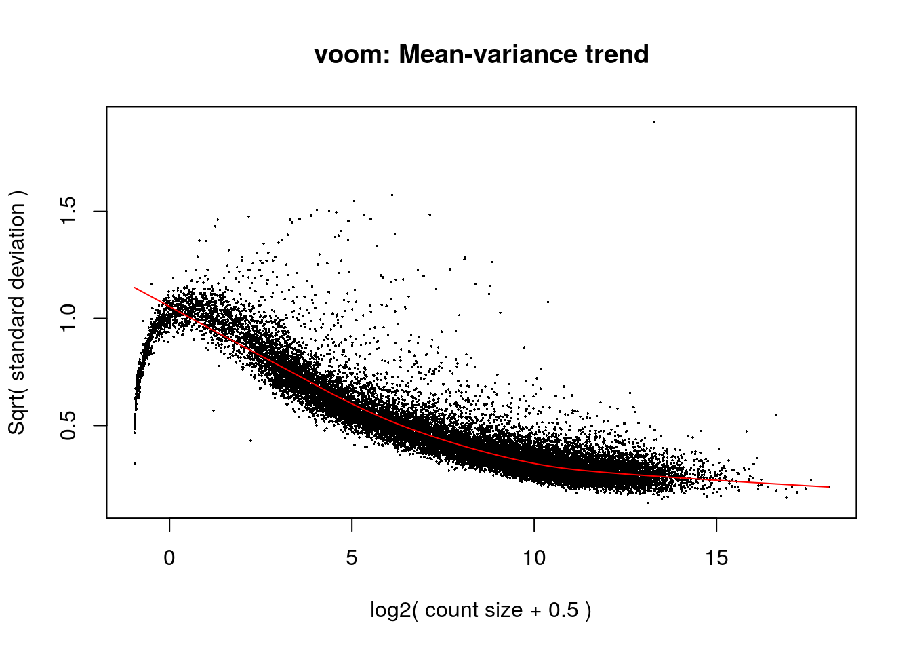
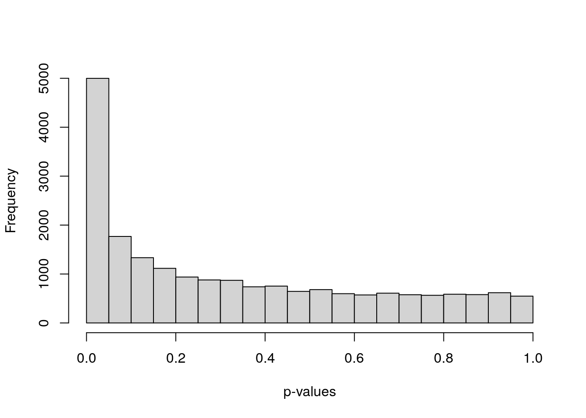

5 Differential Gene Expression analysis with limma-voom
Instructor: Daianna González Padilla
In this chapter you’ll learn how DGE analysis is performed under the empirical Bayes framework of the popular limma-voom pipeline, highlighting key assumptions and concepts, and main differences with other methodologies.
5.1 NB-based DGE methods?
An initial central point of discussion around DGE method development is how to model the distribution of the reads. Many methods model the read counts (\(y_{k,ij}\), non-negative integers) of a gene \(i\) in the \(j\) samples of condition \(k\) through the Poisson or the Negative Binomial (NB) distribution. Of these, NB is often preferred as it allows the mean (\(\mu\)) and the variance (\(\sigma\)) of the reads to be different, compared to the Poisson distribution where \(\mu\)=\(\sigma\). This is of particular importance as controlling the variance allows to account for variability in the gene expression levels across biological samples [1].

Figure 1: NB-distributed read counts. Modeling of read counts for gene \(i\) in the samples of the first and second conditions based on the NB model. Modified from Li, W. V., & Li, J. J. (2018).
Estimating the NB distribution parameters is necessary to assess DE of each gene \(i\) between any two conditions \(k=1,2\) (Figure 1). Bayesian models are used defining prior distributions and relationships of such parameters. Briefly, after 1) estimating gene-wise NB parameters, 2) the mean-variance relationship across all genes can be used to shrink the gene variance estimations borrowing information from all genes or incorporating prior knowledge, something advantageous when sample sizes are small. 3) A statistical test is used to assess for each gene \(i\) if its true expression in the first and second condition (\(\theta_{1i}\) and \(\theta_{2i}\)) is the same (null hypothesis) or differs (alternative hypothesis):
- \(H_0: \theta_{1i}=\theta_{2i}\)
- \(H_1: \theta_{1i}≠\theta_{2i}\), where the \(\theta_{i}\)’s are parameters included in the mean of the NB distributions (\(\mu\)).
4) The test statistic is computed for each gene and 5) its associated p-value is calculated based on the null distribution. 6) Finally, p-values are corrected for multiple-testing and DEGs are determined based on an adjusted p-values cutoff [1].
Examples of popular methods based on the NB distribution are edgeR and DESeq2.
Nevertheless, one limitation NB-based methods face is that they set dispersion of the data as a known and global parameter, ignoring observation-specific variation and importantly, there’s a reduced number of statistical methods for count distributions compared to the normal distribution [1,2]. Here, we’ll focus on limma that does not rely on a certain distribution but rather works on \(log_2(cpm)\) (CPM: counts per million) and fits linear models for DGE enabling the incorporation of additional predictors to model gene expression, a feature specially valuable for complex experimental settings.
5.2 limma-voom pipeline
limma is a package for the analysis of gene expression data arising from microarray or RNA-seq technologies. It has features that make the analyses stable even for experiments with small number of arrays or samples —this is achieved by borrowing information across genes. It is specially designed for analyzing complex experiments with a variety of experimental conditions and predictors [3].
Usually, limma DGE analysis is carried out in five main steps, the last four of them completed by limma R functions, as described below. We’ll use bulk RNA-seq data from the smokingMouse package to exemplify these steps.
## Load the container package for RSE
library("SummarizedExperiment")
## Connect to ExperimentHub
library("ExperimentHub")
eh <- ExperimentHub::ExperimentHub()
## Load package datasets
myfiles <- query(eh, "smokingMouse")
## Download the mouse gene data
rse_gene <- myfiles[["EH8313"]]
## Samples from the nicotine experiment and from pups only
rse_gene_nic <- rse_gene[, which(rse_gene$Expt == "Nicotine" & rse_gene$Age == "Pup")]
## Retain only expressed genes (passed the filtering step)
rse_gene_filt <- rse_gene_nic[
rowData(rse_gene_nic)$retained_after_feature_filtering,
]Let’s explore a little the data.
## Raw counts for first 3 genes in the first 5 samples
assays(rse_gene_filt)$counts[1:3, 1:5]
#> [,1] [,2] [,3] [,4] [,5]
#> ENSMUSG00000051951.5 2652 2107 1978 2691 1833
#> ENSMUSG00000102331.1 15 15 9 15 13
#> ENSMUSG00000025900.13 10 7 28 11 8
## Log-normalized counts for first 3 genes in the first 5 samples
assays(rse_gene_filt)$logcounts[1:3, 1:5]
#> [,1] [,2] [,3] [,4] [,5]
#> ENSMUSG00000051951.5 5.639967 5.953457 5.4923034 5.903313 5.800879
#> ENSMUSG00000102331.1 -1.747878 -1.130265 -2.1809593 -1.517393 -1.282590
#> ENSMUSG00000025900.13 -2.295096 -2.173926 -0.6153596 -1.941338 -1.948814
## Data for the first 2 samples
head(colData(rse_gene_filt), 2)
#> DataFrame with 2 rows and 71 columns
#> SAMPLE_ID FQCbasicStats perBaseQual perTileQual perSeqQual perBaseContent GCcontent Ncontent
#> SeqLengthDist SeqDuplication OverrepSeqs AdapterContent KmerContent SeqLength_R1 percentGC_R1 phred15-19_R1
#> phred65-69_R1 phred115-119_R1 phred150-151_R1 phredGT30_R1 phredGT35_R1 Adapter65-69_R1 Adapter100-104_R1
#> Adapter140_R1 SeqLength_R2 percentGC_R2 phred15-19_R2 phred65-69_R2 phred115-119_R2 phred150-151_R2 phredGT30_R2
#> phredGT35_R2 Adapter65-69_R2 Adapter100-104_R2 Adapter140_R2 ERCCsumLogErr bamFile trimmed numReads
#> numMapped numUnmapped overallMapRate concordMapRate totalMapped mitoMapped mitoRate totalAssignedGene rRNA_rate
#> Tissue Age Sex Expt Group Pregnant plate location concentration
#> medium date Pregnancy flowcell sum detected subsets_Mito_sum subsets_Mito_detected
#> subsets_Mito_percent subsets_Ribo_sum subsets_Ribo_detected subsets_Ribo_percent retained_after_QC_sample_filtering
#> retained_after_manual_sample_filtering
#> [ reached getOption("max.print") -- omitted 3 rows ]
📝 Exercise 1: in order for you to perform a DGE analysis, locate your own RNA-seq datasets if you have any, or download expression data from a study of your interest and build a RSE object using recount3 (see Chapter 3: recount3 introduction). A third option you have is to download gene expression data from the smokingMouse package used here. A fourth option is to download data from GEO as Sean Davis will explain next. We’ll have more time tomorrow for doing this exercise with data of your choosing.
5.2.1 model.matrix()
limma fits a linear model to the expression data of each gene (response variable), modeling the systematic part of the data by sample-level covariates (predictors).
💡 A model is a specification of how a set of variables relate to each other. In the case of a linear model, it is a linear equation that describes how the dependent or response variable is explained by the independent variables, also called predictors. A regression analysis with more than one independent variable is called multiple regression. Regression with only one independent variable is called simple regression [4].
The limma model is specified with a design matrix, also known as model matrix or regressor matrix, often denoted by \(X\). This is a matrix of values for explanatory variables of the samples: rows correspond to samples and columns to sample variables.
Say that the values the \(i\)th sample take in the \(h\) covariates are \(X_{ih}\)’s and their coefficients are \(\beta_{h}\)’s. The predicted expression of a gene in the \(i\)th sample is given by \(\hat y_i =\beta_0 + \sum_{1}^h\beta_{h}X_{ih}\).
\[ \hat y = X\beta=\displaystyle {\begin{bmatrix} \hat y_{1}\\ \hat y _{2}\\ \hat y_{3}\\...\\ \hat y_{n-1}\\ \hat y_{n}\end{bmatrix}}={\begin{bmatrix}1&X_{11}&X_{12}&X_{13}&\cdots&X_{1,h-1}&X_{1h}\\1&X_{21}&X_{22}&X_{23}&\cdots&X_{2,h-1}&X_{2h}\\1&X_{31}&X_{32}&X_{33}&\cdots&X_{3,h-1}&X_{3h} \\ \vdots & \vdots & \vdots & \vdots & \ddots & \vdots & \vdots \\1&X_{n-1,1}&X_{n-1,2}&X_{n-1,3}&\cdots&X_{n-1,h-1}&X_{n-1,h} \\1&X_{n,1}&X_{n,2}&X_{n,3}&\cdots&X_{n,h-1}&X_{n,h} \end{bmatrix}}{\begin{bmatrix}\beta _{0}\\\beta _{1}\\\beta _{2}\\\beta_{3}\\...\\\beta_{h-1}\\\beta_{h}\end{bmatrix}} \] where \(n\) is the number of samples.
In the first step we create this matrix using model.matrix() that receives a formula with the variables to include in the models and the sample data.
## Define formula
formula <- ~ Group + Sex + flowcell + mitoRate + overallMapRate + totalAssignedGene + detected + ERCCsumLogErr
## Model matrix
model <- model.matrix(formula, data = colData(rse_gene_filt))
head(model)
#> (Intercept) GroupExperimental SexM flowcellHKCMHDSXX flowcellHKCNKDSXX flowcellHKCTMDSXX mitoRate overallMapRate
#> 1 1 0 0 0 1 0 0.03876995 0.9811
#> 2 1 1 0 0 1 0 0.03337699 0.9791
#> 3 1 0 1 0 1 0 0.03606147 0.9825
#> 4 1 1 1 1 0 0 0.03962591 0.9855
#> totalAssignedGene detected ERCCsumLogErr
#> 1 0.7715862 26545 -67.33211
#> 2 0.7778447 24545 -66.38868
#> 3 0.7870034 25640 -58.89350
#> 4 0.7786461 25905 -84.91929
#> [ reached getOption("max.print") -- omitted 2 rows ]❓ Which variables to include as covariates in the models? A straightforward strategy is to keep the model as simple as possible and after fitting the model evaluate the comparisons of interest [3]. In Chapter 7 we will discuss how correlation and variance partition analyses can help us to set up the best models.
⚠️ Very important: always check which condition group is set as the reference in you model for the coefficient/contrast of interest (column named as [Coefficient_name][Reference_Group]; corresponding reference group set to 1) as this determines if a DEG is up or downregulated in the given condition compared to the other.
📝 Exercise 2: identify the sample data of your study and create the respective design matrix. Which is the reference group for your main variable of interest?
Tomorrow we will learn how to use ExploreModelMatrix for helping us interpret coefficients.
5.2.2 voom()
Compared to NB-based methods, limma works with \(log2(cpm)\) which are approximately normally distributed (as we have seen) and thus, opens the possibility to leverage a wide range of normal-based statistical tools not available for count distributions, including methods developed for microarray data. However, limma doesn’t assume nor require data to follow a normal distribution, but it does apply normal-based microarray-like statistical methods to RNA-seq read counts [2].
“… limma does not make any assumption that the data appears normal in a histogram.”- Gordon Smyth, author of limma, in the Bioconductor support website 2021.
The benefit of using \(log2(cpm)\), however, is not immediate. One limitation for the direct application of normal-based methods to log-counts is that reads counts have unequal variabilities even after a log-transformation depending on the count sizes: probability distributions for counts are naturally heteroscedastic, with log-cpm not having constant variances (larger variances for larger counts) [2]. It has been proposed that to design powerful statistical analysis for RNA-seq, it is more important to model the relationship between the mean and the variance in the data than to specify which probabilistic distribution to use for the counts [2]. And importantly, converting count data taking such relationship into account does open up access to their analysis with normal-based methods. That’s why we use voom().
What voom() does is:
First, to compute log-cpm. Log-normalized expression for gene \(g\) in sample \(i\) (\(y_{gi}\)) is given by
\[ y_{gi}=log_2(\frac{r_{gi} + 0.5}{R_i + 1.0} \times 10^6) \] where \(r_{gi}\) is the raw count for the gene in the sample and \(R_i\) the library size of the sample. We add +0.5 to the counts to avoid log of zero and +1 to the library size to ensure that \(\frac{r_{gi}+0.5}{R_i+1}\) is strictly less than 1 (if \(r_{gi} = R_i\)).A linear model is fitted to gene log-cpm values by ordinary least squares as: \[ E(y_{gi})=\mu_{gi}=X_i\beta_g \] where \(E(y_{gi})\) is the expected expression of gene \(g\) in sample \(i\), \(X_i\) is the vector with the sample values for the covariates and \(\beta_g\) the vector of covariate coefficients for the gene. As a result, we have the estimated \(\hat\beta_g\), the fitted log-cpm’s \(\hat\mu_{gi}=X_i\hat\beta_g\) and the residual standard deviations \(s_g\).
Then it estimates the mean-variance trend of the data by fitting a smooth curve to the \(\sqrt s_g\) of the genes presented as a function of the average gene expression (in log-counts, not log-cpm). The \(\sqrt s_g\)’s are used because they are symmetrically distributed. Log-counts typically show a decreasing mean-variance trend.
voom()then predicts the standard deviation of each individual normalized observation \(y_{gi}\) (limma-trend does that at the gene level) using this trend curve: the fitted log-count of each observation is mapped to the curve and its \(\sqrt s_{gi}\)value is obtained. The observation weights are \(w_{gi}=\frac{1}{s_{gi}^2}\).

Figure 2: voom() procedure to estimate observation-level variance weights for limma. Extracted from the original voom publication ( Law, C. W. et al. 2018).
- Log-cpm (\(y_{gi}\)) and associated weights (\(w_{gi}\)) can then be entered into the limma framework for linear modeling. These weights are used in the linear modeling to adjust for count heteroscedasticity [2].
library("limma")
## voom():
# 1. Transform counts to log2(cpm)
# ----------------------------------------------------------------------------
# . | Note we passed voom() raw counts as input, not the lognorm counts!!! |
# ----------------------------------------------------------------------------
# 2. Estimate mean-variance relationship for each gene
# 3. Compute observation weights for limma (next step)
vGene <- voom(assay(rse_gene_filt), design = model, plot = TRUE)
Let’s explore the outpus of this function.
vGene$E[1:5, 1:5]
#> [,1] [,2] [,3] [,4] [,5]
#> ENSMUSG00000051951.5 5.906572 6.1425731 5.7434780 6.133741 6.061250
#> ENSMUSG00000102331.1 -1.512368 -0.9445475 -1.9587859 -1.306258 -1.024247
#> ENSMUSG00000025900.13 -2.074247 -1.9918532 -0.3738234 -1.736892 -1.691672
#> ENSMUSG00000025902.13 1.446325 1.2611275 1.3707154 1.419026 1.688471
#> ENSMUSG00000098104.1 1.572354 1.2408075 1.4727667 1.404882 1.533748
## weights: contains the computed variance weight for each observation
dim(vGene$weights)
#> [1] 19974 42vGene$weights[1:5, 1:5]
#> [,1] [,2] [,3] [,4] [,5]
#> [1,] 143.326885 117.323375 139.214140 141.247546 128.818305
#> [2,] 4.255525 4.277395 2.698902 5.113520 3.377285
#> [3,] 4.009671 3.341317 5.555186 4.020098 2.546810
#> [4,] 20.584769 15.108579 15.521441 19.219652 16.893714
#> [5,] 22.473314 16.369739 18.359068 17.691839 14.325510
## design: is the provided design matrix
head(vGene$design)
#> (Intercept) GroupExperimental SexM flowcellHKCMHDSXX flowcellHKCNKDSXX flowcellHKCTMDSXX mitoRate overallMapRate
#> 1 1 0 0 0 1 0 0.03876995 0.9811
#> 2 1 1 0 0 1 0 0.03337699 0.9791
#> 3 1 0 1 0 1 0 0.03606147 0.9825
#> 4 1 1 1 1 0 0 0.03962591 0.9855
#> totalAssignedGene detected ERCCsumLogErr
#> 1 0.7715862 26545 -67.33211
#> 2 0.7778447 24545 -66.38868
#> 3 0.7870034 25640 -58.89350
#> 4 0.7786461 25905 -84.91929
#> [ reached getOption("max.print") -- omitted 2 rows ]
## targets: the sample library sizes used to compute log(cpm) in the first step
dim(vGene$targets)
#> [1] 42 1head(vGene$targets)
#> lib.size
#> 1 44218086
#> 2 29831069
#> 3 36929795
#> 4 38331383
#> 5 27457620
#> 6 27113922
➡️ In summary, voom() estimates non-parametrically the global mean-variance trend of the count data based on the expression of the genes and uses that to predict the variance of each individual expression observation (each log-cpm value) based on their predicted count sizes. The predicted variances are then associated as inverse weights to each observation that when used in linear modeling eliminate the log-cpm mean-variance trend [2].
👉🏼 Advantages:
-
✅
voom()estimates the mean-variance relationship in a non-parametric way. -
✅ Since
voom()is a method to adapt count data to normal models, these give access to tractable empirical Bayes distribution theory. - ✅ The use of normal distribution approaches and variance modeling is supported by generalized linear model theory.
“The parametric advantages of the Poisson or NB distributions are mitigated by the fact that the observed mean-variance relationship of RNA-seq data does not perfectly match the theoretical mean-variance relationships inherent in these distributions. While the quadratic mean-variance relationship of the NB distribution captures most of the mean-variance trend, the NB dispersion still shows a non-ignorable trend with gene abundance.” [2]
📝 Exercise 3: compute the \(log2(cpm)\) and the residual variance weights for each observation in your data using voom().
5.2.3 lmFit()
This limma function fits a multiple linear model to the expression of each gene by weighted or generalized least squares to estimate the coefficients of the sample covariates which correspond to the logFC’s comparing gene expression between sample groups.
Ordinary least squares (OLS)
This is used to estimate the coefficients of a linear regression by minimizing the residual sum of squares [5].

Figure 3: Graphical representation of the OLS method for simple regression analysis. Source: Gulve, A. (2020). Ordinary Least Square (OLS) Method for Linear Regression.
For simplicity, let’s work with one gene and say we have \(n\) samples. The fitted expression of the gene in the \(j\)th sample is \(\hat y_j =\beta_{0} + \sum_{1}^h\beta_{h}X_{jh}\) , where \(\beta_h\) is the coefficient for the \(h\)th covariate and \(X_{jh}\) the value the \(j\)th sample takes for the \(h\)th covariate. It can also be written as \(\hat y_j =\sum_{0}^h\beta_{h}X_{jh}\) if \(X_{j0}=1\).
So we have an overdetermined system of \(n\) linear equations and \(h\) unknown parameters with \(n>h\):
\(\hat y_j =\sum_{0}^h\beta_{h}X_{jh}\) with \(j=(1,2, ..., n)\).
Such system usually has no exact solution, so we need to estimate the coefficients that better fit the data in a linear regression. The problem is reduced to solving a quadratic minimization problem:
\(\hat \beta=arg \ _\beta\ min \ \ S(\beta)\) where \(S(\beta)=\sum_j(y_j -\hat y_j)^2=RSS\) (residual sum of squares).
💡 We can think of these \(\beta\)’s as differences in the fitted (expected) expression of a gene. Say we have two binary categorical variables in the model (\(X_1\) and \(X_2\)), then the expected gene expression in a sample is \(E(y|X_1, X_2) =\hat y =\beta_{0} + \beta_1X_1+\beta_2X_2\), where \(X_1\) and \(X_2\) equal to 1 or 0. Then we have the following 4 combinations:
- \(E(y|X_1=1, X_2=1) = \mu_{12}=\beta_{0} + \beta_1+\beta_2\)
- \(E(y|X_1=1, X_2=0) =\mu_{1}=\beta_{0} + \beta_1\)
- \(E(y|X_1=0, X_2=1) =\mu_{2}=\beta_{0} + \beta_2\)
- \(E(y|X_1=0, X_2=0) =\mu_{0}=\beta_{0}\)
So \(\beta_1=\) \(\mu_1-\mu_0\) \(=\) \(\mu_{12}-\mu_2\) and \(\beta_2=\) \(\mu_2\)\(-\) \(\mu_0\). Say our variable of interest is \(\beta_1\). Then what we are testing is if the expected expression of a gene is different when \(X_1=1\) (in the first sample group) and \(X_1=0\) (in the second sample group), fixing \(X_2\) in either 1 or 0.
Generalized least squares (GLS)
Is a generalization of OLS that allows for heteroskedasticity and correlation between the residuals [6].
Weighted least squares (WLS)
In this case the function to be minimized becomes the weighted sum of the squared residuals: squared residuals are weighted by the reciprocal of their variance so that more noisy observations have less weight. That’s what we used voom() for.
lmFit() returns a fitted model object with the estimated coefficients, standard errors (\(SE=sd/\sqrt n\)) and residual standard errors/deviations (\(RSE=s_g=\sqrt {RSS/ n-2}\)) for each gene. Depending on the arguments and correlations in the data, this function calls one of the following functions to fit a linear model for each gene [7]:
mrlm: for a robust regression ifmethod="robust”.gls.series: GLS estimator ifmethod="ls”and a correlation structure has been specified.lm.series: OLS method ifmethod="ls”and there is no correlation structure.
For the weights argument of lmFit(), the precision weights for the observations previously computed are extracted from the voom() output.
## lmFit():
# 1. Fit linear model for each gene to estimate logFCs
fitGene <- lmFit(vGene)
## Corroborate "ls" method was applied
fitGene$method
#> [1] "ls"
## Explore outputs: estimated coefficients (logFCs)
head(fitGene$coefficients)
#> (Intercept) GroupExperimental SexM flowcellHKCMHDSXX flowcellHKCNKDSXX flowcellHKCTMDSXX
#> ENSMUSG00000051951.5 -35.637900 -0.05125195 0.05690091 -0.47469588 -0.38545404 -0.66545820
#> ENSMUSG00000102331.1 37.943310 0.72450620 0.19887963 -0.20803712 -0.40926270 -0.10900553
#> ENSMUSG00000025900.13 -43.586603 0.17256694 0.28895786 -0.04476551 0.15257245 -0.06949759
#> ENSMUSG00000025902.13 5.657837 -0.05025788 -0.04808144 -0.18732331 -0.26041436 0.07364071
#> mitoRate overallMapRate totalAssignedGene detected ERCCsumLogErr
#> ENSMUSG00000051951.5 -11.487040 37.443647 4.753830 6.442499e-05 -0.0043851842
#> ENSMUSG00000102331.1 -21.871815 27.323603 -79.223111 -1.026687e-04 0.0166190950
#> ENSMUSG00000025900.13 16.727251 7.179484 42.367908 8.535604e-05 0.0133260060
#> ENSMUSG00000025902.13 -24.538883 11.174017 -18.548282 -1.231546e-05 -0.0092194951
#> [ reached getOption("max.print") -- omitted 2 rows ]💡 Interaction terms in linear models
There may be cases where we want to assess gene expression differences between 2 conditions within more than one specific group; for example if we were interested in knowing what are the effects of a treatment (\(X_1=1\) for treatment and 0 for controls) in females and males separately (\(X_2=1\) for females and 0 for males). In such cases we can fit an interaction model in which we include the product of \(X_1\) and \(X_2\) so that \(X_1X_2=1\) if a sample comes from a female that was treated and 0 otherwise:
\[E(y|X_1, X_2) =\beta_{0} + \beta_1X_1+\beta_2X_2 + \beta_3X_1X_2\]
- \(E(y|X_1=1, X_2=1) =\mu_{12} =\beta_{0} + \beta_1+\beta_2+\beta_3\)
- \(E(y|X_1=1, X_2=0) =\mu_{1} =\beta_{0} + \beta_1\)
- \(E(y|X_1=0, X_2=1) =\mu_{2} =\beta_{0} + \beta_2\)
- \(E(y|X_1=0, X_2=0) =\mu_{0} =\beta_{0}\)
\(\beta_1 + \beta_3=\) \(\mu_{12}-\mu_2\) which is the expression difference between treated and control female samples (\(X_2=1\)) and \(\beta_1 =\) \(\mu_{1}-\mu_0\) for male samples (\(X_2=0\)). Finally \(\beta_3\), called the interaction term, is (\(\mu_{12}-\mu_2\))\(-\)(\(\mu_1-\mu_0\)), described as the difference in gene expression changes driven by the treatment in females compared to males [8].
📝 Exercise 4: fit a linear regression model to the expression data of your genes and extract the coefficients for the included covariates.
5.2.4 eBayes()
Next, we want to assess if the differences in gene expression between the sample groups are statistically significant. Initially, we can think of comparing the mean expression of a gene in the sample groups (e.g. cases and controls) which can be handled applying a two-sample t-test assuming that the values in both groups have an approximately normal distribution.
Here we use the t-score (t-stats) to define if the difference in the means is statistically significant based on a t-distribution.
The t-stats is given by:
\[ t=\frac{\bar x_1 - \bar x_2}{\sqrt{\frac{s_1^2}{n_1}+\frac{s_2^2}{n_2}}} \]
where \(\bar x_1\) and \(\bar x_2\) are the means of the expression values of a gene in the first and second sample groups, \(s_1\) and \(s_2\) are the sample standard deviations of gene expression in the same groups, and \(n_1\), \(n_2\) the corresponding sample group sizes:
\(s_1 = \sqrt{\frac{\sum_{i=1}^ {n_1} (x_i-\bar x_1)^2}{n_1-1}}\) and \(s_2 = \sqrt{\frac{\sum_{j=1}^ {n_2} (x_j-\bar x_2)^2}{n_2-1}}\), with \(x_i\) and \(x_j\) the gene expression values in the samples of group 1 and 2, respectively.
➡️ Note that we say sample means and sample standard deviations because they are estimators of the population parameters, computed based on the data that we have.
We can think of this t-stats as a ratio of signal and noise. The numerator contains the difference between the two means, taken as the signal for DE. The denominator corresponds to the standard error and represents the noise in terms of gene expression variance within the sample groups. This represents how spread out the signal is [9]. In that way, the t-stats is a measure of how strong is the DE signal. Once computed, the t-stats have an associated p-value based on a Student t-distribution under the null hypothesis (\(H_o\): \(\bar x_1 - \bar x_2=0\)).
This is exactly what we can get using lm():
## Lognorm expression of first gene
rse_gene_one_gene <- rse_gene_filt[1, ]
colData(rse_gene_one_gene) <- cbind(colData(rse_gene_one_gene),
"lognorm_expr" = assays(rse_gene_one_gene)$logcounts[1, ]
)
## Fit simple linear model
formula <- lognorm_expr ~ Group
lm <- lm(formula, data = colData(rse_gene_one_gene))
summary(lm)
#>
#> Call:
#> lm(formula = formula, data = colData(rse_gene_one_gene))
#>
#> Residuals:
#> Min 1Q Median 3Q Max
#> -1.05368 -0.06304 0.03012 0.10254 0.24844
#>
#> Coefficients:
#> Estimate Std. Error t value Pr(>|t|)
#> (Intercept) 5.75377 0.04502 127.800 <2e-16 ***
#> GroupExperimental -0.04292 0.06694 -0.641 0.525
#> ---
#> Signif. codes: 0 '***' 0.001 '**' 0.01 '*' 0.05 '.' 0.1 ' ' 1
#>
#> Residual standard error: 0.2159 on 40 degrees of freedom
#> Multiple R-squared: 0.01017, Adjusted R-squared: -0.01457
#> F-statistic: 0.4111 on 1 and 40 DF, p-value: 0.525
## Two sample t-test
t.test(formula, data = colData(rse_gene_one_gene), var.equal = TRUE)
#>
#> Two Sample t-test
#>
#> data: lognorm_expr by Group
#> t = 0.64121, df = 40, p-value = 0.525
#> alternative hypothesis: true difference in means between group Control and group Experimental is not equal to 0
#> 95 percent confidence interval:
#> -0.09236465 0.17820636
#> sample estimates:
#> mean in group Control mean in group Experimental
#> 5.753765 5.710845💡 Sample sizes are critical! Larger sample sizes increase the power of the tests and reduce the false discovery rate (FDR) as they decrease the denominator of the t-stats (increasing their values) and slight differences can then be detected.
⚠️ Now consider that for genes with small variances in their expression the t-stats will be greater and we could be detecting non-DEGs as DE (false positives).
But two things must be considered at least when working with gene expression data:
- The first is that expression values are usually not normally distributed.
- Second, the distributions and variances of expression values vary across genes and conditions.
➡️ With that in mind, inference at the individual gene level can be addressed borrowing information from all the genes in the experiment through a Bayes or empirical Bayes method that produces more powerful tests.
The idea of Bayesian statistics is to give unknown quantities a prior distribution, considering each feature as a member of a population of features such as genes. More specifically, empirical Bayes methods are procedures for statistical inference in which the (empirical) prior distribution is estimated from the population of all features (from the data) [8]; in standard Bayesian methods this prior distribution is fixed before observing any data [10].
Inspired by the work of Lönnstedt and Speed (2002) in which a simple expression for the posterior odds of differential expression for each gene was computed using a parametric empirical Bayes approach, Smyth, G. K. (2004) generalized this model for its application to experiments with any numbers of samples and conditions and reformulated the posterior odds statistic in terms of a moderated t-statistic in which the posterior residual standard deviations are used instead of the ordinary ones, eliminating the requirement of knowing the non-null prior guess for the proportion of differentially expressed genes required in the log-odds [11]. Let’s see how it proceeds.
First, for each gene \(g\) we have a vector with the expression values in the \(n\) samples:
\[ y_{g}= (y_{g1}, y_{g2}, ..., y_{gn}) \]
We already know that the expected (predicted) gene expression in the samples is \(E(y_{g})=X\alpha_g\) with \(X\) the design matrix and \(\alpha_g\) the vector of the coefficients for the \(h\) covariates in the model; of these the ones of biological interest are the \(\beta_g\)’s (contrasts of interest).
Then, as previously described, a linear model is fitted to the expression data for each gene to obtain the coefficient estimators (\(\hat \alpha_g\)) (as well as \(\hat \beta_g\)), the residual sample variances (\(s_g^2\)) as estimators of the (true but unknown) residual variances (\(\sigma_g^2\)), and the estimated covariance matrices.
Two relevant considerations here:
- The expression values are not necessarily assumed to be normally distributed.
- The linear model is not assumed to be necessarily by least squares.
However, there are two assumptions:
- The contrast estimators \(\hat \beta_g\) are assumed to be approximately normally distributed with mean \(\beta_g\).
- The residual sample variances (\(s_g^2\)) are assumed to follow approximately a scaled chisquare distribution.
Under such assumptions the ordinary t-stats for the covariate \(j\) in the gene \(g\) is defined by:
\[ t_{gj}=\frac{\hat \beta_{gj}}{s_g u_{gj}}=\frac{\hat \beta_{gj}}{SE(\hat \beta_{gj})} \]
with \(s_g\) the residual sample standard deviation of the gene and \(u_{gj}\) the unscaled standard deviation. \(SE\) stands for standard error.
The key step in the empirical Bayes approach of limma is to leverage the information across all genes by defining prior distributions for the unknown coefficients \(\beta_{gj}\) and residual variance \(\sigma_g^2\) of the genes.
For \(\beta_{gj}\) it models the prior distribution of the coefficients that are not zero, i.e. is the expected distribution of the logFC of the genes that are DE, is given by: \[\beta_{gj}|\sigma_{g}^2, \beta_{gj}≠0 \sim N(0, v_{0j}\sigma_g^2)\]
“Saying that the betas have prior information centered around zero implies that we are ignorant of the sign (+/-) of the beta.”
– Vincent Carey (personal communication)
- For the residual variances what limma does is to take the residual sample variances of all genes (\(s_g^2\)’s) and estimate the empirical parameters of the gamma distribution it is assumed that they follow. Specifically, \(\frac{1}{\sigma_g^2}\) is modeled by a scaled chisquare (gamma) prior distribution with mean \(\frac{1}{s_0^2}\) and \(d_0\) degrees of freedom, describing how the residual variances are expected to vary across genes: \[\frac{1}{\sigma_g^2} \sim \frac{1}{d_0s_0^2}\chi_{d_0}^2\]
What we want to do next is not only to take the mean of the residual variances in the distribution (prior mean\(\frac{1}{s_0^2}\)) but to estimate each gene residual variance as a Bayes predictor: as a weighted average of the prior mean (\(\frac{1}{s_0^2}\)) and the observed sample variance (\(s_g^2\)) of each gene. This is called the moderated variance and what is graphically happening is that we are pulling the observed gene variances towards the prior mean variance: large variances are reduced and the |t-stats| increases (more powerful t-test for those genes) and small variances are increased, decreasing the |t-stats| and the power of the t-test. Under this model the posterior residual sample variance or posterior residual variance estimator (\(\tilde s_g^2\)) is:
\[ \tilde s_g^2=E(\sigma_g^2|s_g^2)=\frac{d_0s_0^2 + d_gs_g^2}{d_0+d_g} \]
Moderation is somehow like having larger sample sizes for the estimation of variance given that the moderated variances are (on average) closer to the population variance than the original sample variances.
The moderated t-statistic can be now defined in terms of this posterior residual sample standard deviations instead of the usual ones:
\[ \tilde t_{gj}=\frac{\hat \beta_{gj}}{\tilde s_g u_{gj}} \]
These moderated t-stats follow a t-distribution under the null hypothesis (\(H_o:B_{gj}=0\)) with degrees of freedom \(d_g+d_0\) and the associated p-values can be computed based on such distribution.
As previously stated, with this redefined formula, large t-stats merely from very small \(s_g\)’s are avoided. This results in increased power and reduced false non-discovery rate (FNR) (non detected DEGs) and the number of DEGs obtained increases [8].
In the end we say we have moderated the residual sample standard deviations of each gene in the t-stats denominator by using the distribution of all of them across the population of genes.
eBayes() will implement this empirical Bayes model to compute for each gene and for each contrast these moderated t-statistic and their unadjusted p-values. Additionally, it returns moderated F-statistic and log-odds of differential expression. The moderated F-statistic tests whether any of the contrasts for a gene is non-zero (\(H_0:B_{g}=0\)), i.e., whether that gene is differentially expressed for any contrast; it is similar to the ordinary F-statistic from analysis of variance (ANOVAR). The t-test does that for each individual contrast \(j\) (\(H_0:B_{gj}=0\)).
👉🏼 Check more about F-stats and other statistics computed by eBayes() here: https://support.bioconductor.org/p/6124/.
## eBayes()
## 1. Compute the empirical Bayes statistics for DE
eBGene <- eBayes(fitGene)
## Outputs of interest:
## s2.prior -> prior residual variance (prior mean 1/s0^2)
## in prior distribution of residual variances
eBGene$s2.prior
#> [1] 0.78987
## df.prior -> degrees of freedom d0 in prior distribution
## of residual variances
eBGene$df.prior
#> [1] 4.913248
## s2.post -> posterior residual sample variances of the genes (~sg^2)
length(eBGene$s2.post)
#> [1] 19974eBGene$t[1:5, 1:5]
#> (Intercept) GroupExperimental SexM flowcellHKCMHDSXX flowcellHKCNKDSXX
#> ENSMUSG00000051951.5 -4.4458336 -1.0615386 1.2467597 -4.8896590 -4.2555598
#> ENSMUSG00000102331.1 1.5930925 4.5298885 1.3144392 -0.6934431 -1.3930231
#> ENSMUSG00000025900.13 -1.2896585 0.8392518 1.4887297 -0.1047634 0.3829694
#> ENSMUSG00000025902.13 0.4035855 -0.5885950 -0.5891347 -1.0922124 -1.6131630
#> ENSMUSG00000098104.1 0.7120536 -0.3614893 -1.0031002 0.6473100 1.0165548
## p.value: corresponding unadjusted p-values of moderated t-stats
dim(eBGene$p.value)
#> [1] 19974 11eBGene$p.value[1:5, 1:5]
#> (Intercept) GroupExperimental SexM flowcellHKCMHDSXX flowcellHKCNKDSXX
#> ENSMUSG00000051951.5 8.086618e-05 2.955320e-01 0.2205562 2.114989e-05 0.0001425797
#> ENSMUSG00000102331.1 1.199041e-01 6.283899e-05 0.1970317 4.924924e-01 0.1721763827
#> ENSMUSG00000025900.13 2.054130e-01 4.068800e-01 0.1452882 9.171465e-01 0.7039999597
#> ENSMUSG00000025902.13 6.889106e-01 5.598170e-01 0.5594589 2.820128e-01 0.1154631942
#> ENSMUSG00000098104.1 4.810321e-01 7.198519e-01 0.3225237 5.215478e-01 0.3161651149📝 Exercise 5: obtain the moderated t-stats and associated p-values of all genes in you data for all covariates included in your model.
5.2.5 topTable()
This function is also provided by limma and summarizes the results of the linear model, performs hypothesis tests and adjusts the p-values for multiple testing [12]. Among the summary statistics presented, it returns the log2FCs, moderated t-statistics, p-values, and FDR-adjusted p-values of the genes for a given contrast of interest. The default form of p-value adjustment is the Benjamini and Hochberg’s method to control the false discovery rate (FDR) which assumes independence between genes.
Relevant concepts:
- q-value → is the FDR-adjusted p-value used to control the False Discovery Rate (FDR) that is the expected proportion of false discoveries among the discoveries (DEGs). Selecting discoveries as those being below \(\alpha\) in q-value, we control FDR ≤ \(\alpha\).
Now we have the final statistics to determine wich genes are DE.
## topTable()
## 1. Obtain gene-wise DE stats for Group (Nicotine vs Ctrl)
top_genes <- topTable(eBGene, coef = coef, p.value = 1, number = nrow(rse_gene_filt), sort.by = "none")
## Outputs for each gene and for the coeff selected (Group):
## logFC: log2-fold-changes
head(top_genes$logFC)
#> [1] -0.05125195 0.72450620 0.17256694 -0.05025788 -0.02726320 -0.02684710In limma the \(\beta_{gj}\)’s are the logFC’s:
## t: moderated t-stats
head(top_genes$t)
#> [1] -1.0615386 4.5298885 0.8392518 -0.5885950 -0.3614893 -1.0959528
## . P.value: unadjusted p-values of t-stats
head(top_genes$P.Value)
#> [1] 2.955320e-01 6.283899e-05 4.068800e-01 5.598170e-01 7.198519e-01 2.803946e-01
## adj.P.Val: p-values adjusted to control the FDR
head(top_genes$adj.P.Val)
#> [1] 0.53854173 0.00412576 0.63704026 0.75340755 0.85943342 0.52324928After running all these 5 steps, one main initial plot we have to look at is the histogram of the p-values of the moderated t-stats of the genes. If there were DEGs, we’d expect to see a flat distribution of p-values corresponding to non-DEGs and a peak near p=0 for DEGs (for which we reject the null hypothesis). If this peak is absent but a uniform distribution still appears, DEGs might be detected after correcting for multiple testing.

If very different p-value distributions are obtained from the uniform one, the best we can do is trying to explore if there are specific groups of genes (e.g. lowly-expressed genes) presenting such variable p-values and revisiting the assumptions and considerations of the statistical tests implemented [13].
📝 Exercise 6: obtain the DE logFCs, t-stats, p-values, and adjusted p-values of the genes for a given constrast/covariate under study.
5.3 DE visualization
DEGs are identified defining a significance threshold (on the adjusted p-values). Let’s quantify the number of DEGs for nicotine exposure in pup brain and visualize their expression and DE statistics.
## DEGs for FDR<0.05
de_genes <- top_genes[which(top_genes$adj.P.Val < 0.05), ]
## Number of DEGs
dim(de_genes)
#> [1] 1895 65.3.1 Volcano plots
A very practical and useful plot to graphically represent DEGs and visualize their expression differences between conditions is a volcano plot. This is a scatter plot of the logFC’s of the genes in the x-axis vs their adjusted p-values in a -log scale in the y-axis.
library("ggplot2")
## Define up- and down-regulated DEGs, and non-DEGs
FDR <- 0.05
DE <- vector()
for (i in 1:dim(top_genes)[1]) {
if (top_genes$adj.P.Val[i] > FDR) {
DE <- append(DE, "n.s.")
} else {
if (top_genes$logFC[i] > 0) {
DE <- append(DE, "Up")
} else {
DE <- append(DE, "Down")
}
}
}
top_genes$DE <- DE
## Colors, sizes and transparencies for up & down DEGs and non-DEGs
cols <- c("Up" = "indianred2", "Down" = "steelblue2", "n.s." = "grey")
sizes <- c("Up" = 1.3, "Down" = 1.3, "n.s." = 0.8)
alphas <- c("Up" = 0.4, "Down" = 0.6, "n.s." = 0.5)
## Plot volcano plot
ggplot(
data = top_genes,
aes(
x = logFC, y = -log10(adj.P.Val),
color = DE,
fill = DE,
size = DE,
alpha = DE
)
) +
geom_point(shape = 21) +
geom_hline(
yintercept = -log10(FDR),
linetype = "dashed", color = "gray35", linewidth = 0.5
) +
geom_vline(
xintercept = c(-1, 1),
linetype = "dashed", color = "gray35", linewidth = 0.5
) +
labs(y = "-log10(FDR)", x = "logFC(Nicotine vs Control)") +
theme_bw() +
scale_color_manual(values = cols, name = "Differential expression") +
scale_fill_manual(values = cols, name = "Differential expression") +
scale_size_manual(values = sizes, name = "Differential expression") +
scale_alpha_manual(values = alphas, name = "Differential expression") +
theme(
plot.margin = unit(c(1, 1, 1, 1), "cm"),
legend.key.height = unit(0.15, "cm"),
axis.title = element_text(size = (13)),
legend.title = element_text(size = 13),
legend.text = element_text(size = 12)
)
5.3.2 Heat maps
Another common way to represent differential expression results is through a heat map. The package ComplexHeatmap offers a flexible toolkit to easily create heat maps with row and column annotations, a feature of particular value to plot expression data of genes across samples with multiple biological and technical differences. Although initially all genes in your data can be plotted, frequently only DEGs are included as they tend to show clearer gene expression patterns.
library("ComplexHeatmap")
## We plot lognorm counts
lognorm_data <- assays(rse_gene_filt)$logcounts
## Subset to DEGs only
lognorm_data <- lognorm_data[rownames(de_genes), ]
## Define column (sample) names to display
colnames(lognorm_data) <- paste0("Pup_", 1:dim(lognorm_data)[2])🗒️ Notes:
It is sometimes convenient to regress out the technical variables’ contributions on gene expression to see more clearly the effects of interest. This can happen, for instance, when the logFCs are too small to see any significant differences in the plots or when there are other strong confounding factors. Functions such as
cleaningY()of jaffelab can be used for this purpose.The lognorm counts have to be correctly scaled and centered (around zero) to make the differences in the expression of the genes more notorious in the heat map. A simple way to do that is substracting from each lognorm count \(y_{gi}\) (from the gene \(g\) and sample \(i\)) the mean expression of the gene* and dividing by the standard deviation (\(\sigma\)) of the same gene expression values. This is formally called the z-score: the number of standard deviations away from the mean.
\[ z=\frac{y_{gi} - \frac{\sum_{k=1}^{n}{y_{gk}}}{n}}{\sigma}, \] \(n\) is the number of samples.
* This can also be done by columns (samples), not only by rows (genes).
👉🏼 For more on centering and scaling, see this video:
## Center and scale the data to make differences more evident
lognorm_data <- (lognorm_data - rowMeans(lognorm_data)) / rowSds(lognorm_data)
## Sample annotation: Sex, Group, and library size
col_anno <- HeatmapAnnotation(
df = as.data.frame(colData(rse_gene_filt)[, c("Sex", "Group")]),
library_size = anno_barplot(colData(rse_gene_filt)$sum, gp = gpar(fill = "lightyellow2")),
col = list(
"Sex" = c("F" = "hotpink1", "M" = "dodgerblue"),
"Group" = c("Control" = "gray68", "Experimental" = "gold2")
)
)
## Gene annotation: logFC and biotype
de_genes$logFC_binary <- sapply(de_genes$logFC, function(x) {
if (x > 0) {
">0"
} else {
"<0"
}
})
de_genes$protein_coding_gene <- sapply(rowData(rse_gene_filt[rownames(de_genes), ])$gene_type, function(x) {
if (x == "protein_coding") {
"TRUE"
} else {
"FALSE"
}
})
gene_anno <- rowAnnotation(
df = as.data.frame(cbind(
"logFC" = de_genes$logFC_binary,
"protein_coding_gene" = de_genes$protein_coding_gene
)),
col = list(
"logFC" = c("<0" = "deepskyblue3", ">0" = "brown2"),
"protein_coding_gene" = c("TRUE" = "darkseagreen3", "FALSE" = "magenta")
)
)library("circlize")
## Plot
Heatmap(lognorm_data,
name = "lognorm counts",
show_row_names = FALSE,
top_annotation = col_anno,
left_annotation = gene_anno,
row_km = 2,
column_km = 2,
col = colorRamp2(c(-4, -0.0001, 00001, 4), c("darkblue", "lightblue", "lightsalmon", "darkred")),
row_title = "DEGs",
column_title = "Samples",
column_names_gp = gpar(fontsize = 7),
heatmap_width = unit(12.5, "cm"),
heatmap_height = unit(12.5, "cm")
)
📝 Exercise 7: obtain the number of DEGs you got and represent them in a volcano plot and a heat map. Include all the sample and gene information you consider relevant in the latter.
References
Li, W. V., & Li, J. J. (2018). Modeling and analysis of RNA‐seq data: a review from a statistical perspective. Quantitative Biology, 6(3), 195-209.
Law, C. W., Chen, Y., Shi, W., & Smyth, G. K. (2014). voom: Precision weights unlock linear model analysis tools for RNA-seq read counts. Genome biology, 15(2), 1-17.
Smyth, G. K., Ritchie, M., Thorne, N., Wettenhall, J., Shi, W., & Hu, Y. (2002). limma: linear models for microarray and RNA-Seq data user’s guide. Bioinformatics Division, The Walter and Eliza Hall Institute of Medical Research, Melbourne, Australia.
van den Berg, S. M. (2022). Analysing data using linear models. Web site: https://bookdown.org/pingapang9/linear_models_bookdown/
Wikipedia. (n.d.). Ordinary least squares. Web site: https://en.wikipedia.org/wiki/Ordinary_least_squares
Taboga, Marco (2021). “Generalized least squares”, Lectures on probability theory and mathematical statistics. Kindle Direct Publishing. Online appendix. https://www.statlect.com/fundamentals-of-statistics/generalized-least-squares.
Documentation for lmFit: https://rdrr.io/bioc/limma/man/lmFit.html
The Pennsylvania State University. (2018). Statistical Analysis of Genomics Data. Web site: https://online.stat.psu.edu/stat555/node/36/
Tushe, M. (2021). A Simple Trick to Understand the t-test. Web site: https://miroslavtushev.medium.com/a-simple-trick-to-understand-the-t-test-2c2a9e7f1dc5
Wikipedia. (n.d.). Empirical Bayes method. Web site: https://en.wikipedia.org/wiki/Empirical_Bayes_method#:~:text=Empirical Bayes methods are procedures,before any data are observed.
Smyth, G. K. (2004). Linear models and empirical bayes methods for assessing differential expression in microarray experiments. Statistical applications in genetics and molecular biology, 3(1).
Documentation for topTable: https://www.rdocumentation.org/packages/limma/versions/3.28.14/topics/toptable
Robinson, D. (2014). How to interpret a p-value histogram. Web site: http://varianceexplained.org/statistics/interpreting-pvalue-histogram/